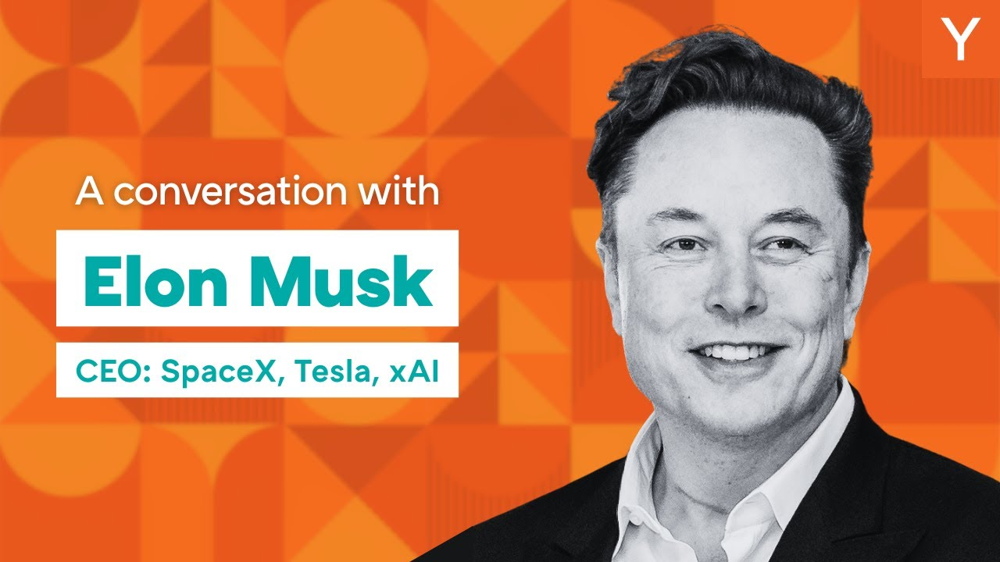

【马斯克：起初我并未想过要成就伟业，我只想创造有用的东西】
Summary: We're at the very early stage of the intelligence big bang, and becoming a multiplanetary species is crucial for extending civilization's lifespan. Elon Musk discusses digital superintelligence, his entrepreneurial journey, and the importance of truth-seeking AI.
摘要： 我们正处于智能大爆炸的早期阶段，成为多行星物种对延长文明寿命至关重要。埃隆·马斯克探讨了数字超级智能、他的创业历程以及追求真相的AI的重要性。

⏱️ Estimated Reading Time: 64 min
📚 四级生词 📚 六级生词 📚 雅思生词 📚 托福生词 📚 专八生词 📚 SAT生词 📚 考研生词 📚 GRE生词 📚 高考生词 📚 其它生词生词
We're at the very, very early stage of the intelligence big bang.
我们正处于智能大爆炸的非常早期阶段。
Being a multi-planetary species greatly increases the probable lifespan of civilization, all consciousness and intelligence, both biological and digital.
成为多行星物种将极大提高文明、所有意识与智能（包括生物和数字）的潜在寿命。
I think we're quite close to digital superintelligence.
我认为我们已非常接近数字超级智能。
It doesn't happen this year, next year for sure.
即使今年未实现，明年也必定会到来。
Please give it up for Elon Musk.
请大家欢迎埃隆·马斯克。
Elon, welcome to AI Startup School.
埃隆，欢迎来到AI创业学院。
We're just really, really blessed to have your presence here today.
今天我们非常荣幸能邀请到你。
Thanks for having me.
谢谢邀请。
So, from SpaceX, Tesla, Neuralink, XAI, and more, was there ever a moment in your life before all this where you felt I have to build something great?
从SpaceX、特斯拉、Neuralink到XAI等，在你的人生中是否曾有过“我必须成就伟业”的时刻？
And what flipped that switch for you?
是什么触发了这种转变？
Well, I didn't originally think I would build something great.
起初我并未想过要成就伟业。
I wanted to try to build something useful, but I didn't think I would build anything particularly great.
我只想创造有用的东西，而非特别伟大的事物。
You've said probabilistically, too unlikely, but I wouldn't really try.
你说过概率上不太可能，但实际并未尝试。
So you're talking to a room full of people who are all technical engineers, often, you know, some of the most eminent AI researchers coming up in the game.
现在你面对的是一屋子的技术工程师，其中不乏顶尖的AI研究者。
Okay.
好的。
I think I like the term engineer better than researcher.
比起“研究者”，我更喜欢“工程师”这个称呼。
I mean, I suppose if there's some fundamental algorithmic breakthrough, it's research, otherwise it's engineering.
若涉及基础算法突破算研究，其余则是工程问题。
Maybe let's start way back.
或许我们可以从头说起。
I mean, when you were, this is a room full of 18 to 25 year olds.
在座的听众多是18到25岁的年轻人。
It's skewed younger because the founder set is younger and younger.
创始人群体日益年轻化。
Can you put yourself back into their shoes when you were 18, 19, learning to code, even coming up with the first idea for Zip2?
你能回忆自己18、19岁学编程、构思Zip2时的经历吗？
What was that like for you?
那段经历对你而言如何？
Yeah, back in 1995, I was faced with a choice of either grad studies, PhD at Stanford, and material science actually working on ultra-capacitors for potential use in electric vehicles, essentially trying to solve the range problem for electric vehicles, or try to do something in this thing that most people would never heard of called the internet.
1995年，我面临选择：是去斯坦福读材料科学博士研究电动车超电容，还是投身当时鲜为人知的互联网。
And I talked to my professor who was a ballistics and materials science expert and said, like, can I defer for the quarter?
我咨询了研究弹道与材料的教授，询问能否休学一学期。
Because this will probably fail and then I'll need to come back to college.
因为创业可能失败，届时我仍需返校。
And then he said, this is probably the last conversation we'll have and he was right.
他说这可能是我们最后一次谈话——他没错。
But I thought things would most likely fail, not that they would most likely succeed.
当时我认为失败概率远高于成功。
And then in 1995, I wrote, basically, I think the first or close to the first, maps, directions, internet, white pages, and yellow pages on the internet.
1995年，我编写了互联网上最早（或接近最早）的地图、导航、白页和黄页服务。
I just wrote that personally.
我亲自完成了这些。
I didn't even use a web server, I just read the port directly.
当时连服务器都没有，直接读取端口。
So I couldn't afford a T1.
我负担不起T1专线。
The original office was on El Camino Avenue in Palo Alto.
最初办公室在帕洛阿尔托的El Camino大道。
There was an ISP on the floor below.
楼下有家ISP。
So I rolled a hole through the floor and just ran a LAN cable directly to the ISP.
我在地板钻孔，拉网线直连ISP。
And my brother joined me and another co-founder Greg Curry who passed away.
我弟弟和已故的Greg Curry加入了团队。
And we, at the time we couldn't even afford a place to stay.
当时我们连住处都负担不起。
So the office was 500 bucks a month, so we just lived in the office and then showered at the YMCA on Page Mill Road.
办公室月租500美元，我们住在那儿，去Page Mill路的YMCA洗澡。
And yeah, and I guess we ended up doing a little bit of a useful company at least in the beginning.
最终我们创立了一家还算有用的公司。
And we did build a lot of really good software technology, but we were somewhat captured by the legacy media companies in that Knight Ridder, New York Times, News Corp, whatnot were investors and customers and also on the board.
我们开发了优秀技术，但被传统媒体集团（如Knight Ridder、纽约时报、新闻集团）通过投资和董事会席位束缚。
So they kept wanting to use our software in ways that made no sense.
他们总想以不合理的方式使用我们的软件。
So I wanted to go direct to consumers.
因此我想直接面向消费者。
Anyway, without dwelling too much on Zip2, but I really just wanted to do something useful on the internet.
简而言之，我只想在互联网上做些有用的事。
Because I had two choices.
当时有两个选择：
Do a PhD and watch people build the internet or help build the internet in some small way.
读博旁观他人建设互联网，或以微小方式参与建设。
And I was like, well, I guess I can always try and fail and then go back to grad studies.
我想大不了失败后继续学业。
And, you know, that ended up being reasonably successful sold for like 300 million dollars, which was a lot at the time.
最终公司以3亿美元出售，这在当时是笔巨款。
At least days that's like, I think minimum viable for an AI startup is like a billion dollars.
如今AI创业的及格线已是10亿美元。
It's like, there's so many frigging unicorns.
独角兽企业遍地开花。
It's like a herd of unicorns at this point.
简直成了独角兽群。
You know, if unicorns are a billion dollar situation.
所谓独角兽就是估值10亿的企业。
There's been inflation since, so quite a bit more money actually.
由于通胀，实际金额更大。
Yeah, I mean, like 95, you could probably buy a burger for a nickel.
1995年一个汉堡只要几美分。
Well, not quite, but I mean, yeah, there has been a lot of inflation.
虽不精确，但通胀确实显著。
But I mean, the hype level in AI is pretty intense.
当前AI领域的炒作极为狂热。
As you've seen, you know, you see companies that are, I don't know, less than a year old, getting sometimes billion dollar and multi-billion dollar valuations, which I guess could pan out and probably will pan out in some cases.
有些成立不足一年的公司估值已达数十亿，部分或许能兑现。
But it is eye-watering to see some of these valuations.
但某些估值仍令人瞠目。
Yeah, what do you think?
你怎么看？
I mean, well, I'm pretty bullish.
我其实非常乐观。
I'm pretty bullish, honestly.
坦率说极其乐观。
So I think that people in this room are going to create a lot of the value that, you know, a billion people in the world should be using this stuff.
我认为在座各位将创造数十亿人使用的价值。
And we're not, we're scratching the surface of it.
目前我们只触及皮毛。
I love the internet story in that even back then, you know, you are a lot like the people in this room back then in that, you know, the heads of all the CEOs of all the legacy media companies look to you as the person who understood the internet.
你的互联网经历很有启发性——当时传统媒体CEO们视你为互联网专家，正如现在外界会仰仗在座各位理解AI。
And a lot of the world, the corporate world, like the world at large that does not understand what's happening with AI.
当前企业界大多不理解AI的进展。
They're going to look to the people in this room, for exactly that.
他们将依赖各位的指引。
It sounds like, you know, what are some of the tangible lessons?
有哪些具体经验？
It sounds like one of them is don't give up board control or be careful about having a really good lawyer.
比如谨慎对待董事会控制权，聘请优秀律师。
I guess for the first, my first startup, the big, the really the mistake was having too much shareholder and board control from legacy media companies who then necessarily see things with the lens of legacy media and that they'll kind of make you do things that seem sensible to them, but are really don't make sense within your technology.
我首个创业项目的重大失误是让传统媒体集团掌控过多股权和董事会席位，导致技术决策受其落后视角影响。
I know I should point out that I didn't actually at first intend to start a company.
需要说明，我最初并未打算创业。
I tried to get a job at Netscape.
我曾试图入职网景公司。
As in my resume internet and Netscape, and Marc Andreessen knows about this.
我向Marc Andreessen投过简历。
And I don't think he gave us somewhere resume and then nobody responded.
但未获回应。
And then I tried hanging out in the lobby of Netscape to see if like bump into someone, but I was like too shy to talk to anyone.
后来我在网景大厅蹲守，却因羞怯未敢搭话。
So like, man, this is ridiculous.
这太荒谬了。
So I'll just write it off for myself and see how it goes.
于是决定自己尝试。
So it wasn't actually from the standpoint of like, I want to start a company.
这并非出于创业野心。
I just want to be part of building, you know, the internet in some way.
只是想参与互联网建设。
And since I couldn't get a job at a internet company, I had to start a company.
既然无法入职互联网公司，只好自己创立。
Anyway, the AI will so profoundly change the future.
AI将深刻改变未来。
It's difficult to fathom how much, but you know, the economy is assuming we don't, things don't go awry and like AI doesn't kill us or we'll end itself.
其程度难以估量——若发展顺利，未来经济规模可能是现在的千万倍。
Then you'll see ultimately an economy that is not 10 times more than the current economy.
最终经济规模将远超现在。
Ultimately, like if we become say, or whatever our future machine descendants or but mostly machine descendants become like a Kardashev scale one civilization or beyond, we're talking about an economy that is thousands of times, maybe millions of times bigger than the economy today.
若达到卡尔达肖夫一级文明以上，经济规模或是现今的百万倍。
Yeah, I mean, I did sort of feel a bit like, you know, when I was in DC, I'd taken a lot of flak for like getting rid of waste and fraud, which was an interesting side quest as side quests go.
在华盛顿打击浪费与欺诈就像支线任务。
But I got to get back to the main quest.
但我必须回归主线。
Yeah, I got to get back to the main quest here.
是的，回归技术主线。
So back to the main quest.
回到核心使命。
So, but I did feel, you know, a little bit like this, you know, it's like fixing the government is kind of like this, like say the beach is dirty and there's like some needles and vials and like trash and you want to clean up the beach.
整顿政府如同清理沙滩上的垃圾。
But then there's also this like thousand foot wall of water, which is a tsunami of AI.
而AI浪潮如同千尺海啸即将袭来。
Like, and how much does cleaning the beach really matter if you got thousand foot tsunami about to hit?
相比之下清理沙滩意义有限。
There's not that much.
确实如此。
Oh, we're glad you're back on the main quest.
很高兴你回归主线。
It's very important.
这至关重要。
Yeah, back to the main quest, building technology, which is what I like doing.
回归我热爱的技术建设。
It's just so much noise.
政治领域噪音太多。
Like this, the single signal-to-noise ratio in politics is terrible.
信噪比极低。
So I mean, I live in San Francisco, so you don't need to tell me twice.
我在旧金山深有体会。
Yeah, DC is like, you know, kind of, I guess it's all politics in DC, but if you're trying to build a rocket or cars or you're trying to have software that compiles and runs reliably, then you have to be maximally truth-seeking or your software or your hardware won't work.
华盛顿充满政治，但建造火箭或汽车需要绝对求真——否则硬件软件都会失效。
Like there's not, you can't fool math, like math and physics are rigorous judges.
数学与物理是严苛的裁判。
So I'm used to being in a maximally truth-seeking environment and that's definitely not politics.
我习惯求真环境，政治绝非如此。
So I'm good.
所以我很好。
Glad to be back in technology.
很高兴回归技术领域。
I guess I'm kind of curious, going back to the Zip2 moment, you had hundreds of millions of dollars or you had an exit of worth hundreds of millions of dollars.
回到Zip2时期，你通过退出获得数亿美元。
I got 20 million dollars.
我实际获得2000万美元。
Right.
是的。
Okay, so you solved the money problem.
你解决了财务问题。
And you basically took it and you rolled, you kept rolling with X.com, which became PayPal and Confinity.
随后投入X.com（后合并为PayPal）。
Yes, I kept the chips on the table.
我将筹码留在牌桌上。
So not everyone does that.
并非所有人都这样做。
A lot of the people in this room will have to make that decision, actually.
在座各位未来也会面临此抉择。
What drove you to jump back into the ring?
为何再次投入创业？
Well, I think I felt with Zip2, we'd built incredible technology, but never really got used.
Zip2的技术未被充分使用。
You know, I think at least from my perspective, we had better technology than say, Yahoo or anyone else, but it was constrained by our customers.
技术优于雅虎等，但受客户限制。
And so I wanted to do something where, okay, we wouldn't be constrained by our customers, go direct to consumer.
因此我想直接面向消费者。
And that's ended up being like X.com PayPal, essentially X.com merging with Confinity, which together created PayPal.
X.com与Confinity合并诞生了PayPal。
And then that actually the sort of PayPal diaspora has it might have created more companies than probably anything in the 21st century.
PayPal系创业者创建了21世纪最多的公司。
So many talented people were at the combination of Confinity and X.com.
两家公司汇聚了大量人才。
So I just wanted to like, I felt like we kind of got our wings clipped somewhat with Zip2.
Zip2如同被剪断翅膀。
And it's like, okay, what if our wings aren't clipped and we go direct to consumer?
若不受限直接面向消费者会如何？
And that's what PayPal ended up being.
这就是PayPal的故事。
But yeah, with I got that like 20 million dollar check for my share of Zip2.
通过Zip2获得2000万美元。
At the time, I was living in a house with four housemates and had like 10 grand in the bank.
当时与四位室友合住，银行存款仅1万美元。
And then this check arrives in the mail of all places and like in the mail.
支票通过邮寄送达。
And then my bank balance went from 10,000 to 20 million and 10,000.
余额从1万跃升至2000万。
You're like, well, okay, select fate taxes on that and all.
当然还需缴税。
But then I ended up putting almost all of that into X.com.
之后几乎全部投入X.com。
And as you said, like just kind of keeping almost all the chips on the table.
如你所说，将筹码留在桌上。
And yeah, and then after PayPal was like, well, I was kind of curious as to why we had not sent anyone to Mars.
PayPal后，我好奇为何人类未登陆火星。
And then I went on the NASA website to find out when we're sending people to Mars.
查阅NASA官网发现并无计划。
And there was no date.
没有时间表。
I thought maybe it was just hard to find on the website.
我原以为可能只是网站上很难找到。
But in fact, there was no real plan to send people to Mars.
但实际上，当时并没有真正的送人去火星的计划。
So then, you know, come, this is such a long story.
于是，这成了一个很长的故事。
So I don't want to take up too much time here.
我不想在这里占用太多时间。
But the I think we're all listening with wrapped attention.
但我想大家都会全神贯注地听。
So I was actually, I was on the long end of the expressway with my friend, a day or se where we're like housemates in college.
当时我和大学室友在高速公路尽头闲聊。
And they was asking me what I'm what we're going to do. What am I going to do after PayPal?
他们问我：“PayPal之后打算做什么？”
And I was like, I don't know, I guess maybe I'd like to do something philanthropic in space because I didn't think I could actually do anything commercial in space because that seemed like the purview of nations.
我说：“不知道，或许做些太空慈善吧，那时我以为商业航天只能是国家的事。”
So, but you know, I'm kind of curious as to when we're going to send people to Mars.
但我一直好奇：“人类何时能登陆火星？”
And that's when I was like, oh, it's not on the website.
结果发现NASA官网根本没这计划。
And I started digging on, there's nothing on the NASA website.
我开始深挖，NASA确实毫无相关内容。
So then I started digging in and and I'm I'm I'm definitely summarizing a lie here.
后来——当然我简化了过程——
But my first idea was to do a philanthropic mission to Mars called Life to Mars where it would send a small greenhouse with season dehydrated nutrient gel land land that are mosqued and grow, you know, hydrate the gel.
最初设想是“火星生命”慈善计划：发射带脱水营养凝胶的小型温室，在火星上种植植物。
And then you have this this great sort of money shot of green plants on a red background.
这样就能拍到红色星球上的绿色植物——
But the longest time I by the way, I didn't realize money shot, I think is a porn reference.
（后来才知道“money shot”是成人影片术语…）
But, but anyway, the point is that that would be the great shot of green plants on a red background and to try to inspire, you know, NASA and the public to to send asteroids to to Mars.
总之这画面能激励NASA和公众支持火星计划。
As I learned more, I just it came to realize, oh, and along the way, by the way, I went to Russia in like 2001 and 2002 to buy ICBMs.
后来我意识到问题本质，期间还去了趟俄罗斯买洲际导弹——
Which is like, that's an adventure, you know, you go and meet with Russian high command and say, I'd like to buy some ICBMs.
2001年跟俄军方谈判买导弹，简直疯狂。
This was to get to space. Yeah, not to not to new anyone.
只是为了航天，绝非威胁谁。
But they had to as a result of our introduction talks, they had to actually destroy a bunch of their big nuclear missiles.
结果俄方因谈判被迫销毁了一批核导弹。
So I was like, well, how about if we take two of those, you know, minus the Duke, added an additional opera stage for Mars.
我说：“不如拆掉弹头，改装成火星运载工具？”
But it was kind of for P, you know, being in Moscow in about 2001 negotiating with like the Russian military to buy ICBMs.
2001年在莫斯科和俄军谈这个，太魔幻了。
Like, that's crazy. And they kept also raising the price on me so that so like literally it's kind of like the opposite of what negotiation should should do.
对方还不断抬价，完全违反谈判常理。
So I was like, man, these things are getting really expensive.
我心想：“这也太贵了。”
And then I came to realize that actually the problem was not that there was insufficient world to go to Mars, but there was no way to do so without breaking the budget, you know, for even breaking the NASA budget.
最终明白：问题不是缺乏意愿，而是现有技术成本连NASA都负担不起。
So that's where I decided to start SpaceX, SpaceX to advance rocket technology to the point where we could send people to Mars.
于是2002年创立SpaceX，目标研发可负担的火星运输技术。
And that was in 2002. So that wasn't, you know, you didn't start out wanting to start a business.
初衷并非创业，而是解决人类所需。
You wanted to start just something that was interesting to you that you thought humanity needed.
你最初只是想做一些自己感兴趣且认为人类需要的事情。
And then as you sort of, you know, like a cat pulling on, you know, a string, it's just sort of the ball sort of unravels.
然后就像猫拉扯绳子一样，事情逐渐展开。
And it turns out this is could be a very profitable business.
结果发现这可能是一门非常赚钱的生意。
I mean, it is now, but there have been no prior example of really a rocket start-up succeeding.
虽然现在确实如此，但此前从未有火箭初创公司成功的先例。
There have been various attempts to do commercial rocket companies and they'd all failed.
过去有许多尝试创办商业火箭公司的努力，但全都失败了。
So again, with SpaceX, starting SpaceX was really from the standpoint of like, I think there's like a less than 10% chance of being successful, maybe 1%, I don't know.
因此，创立SpaceX时，我认为成功率可能不到10%，甚至只有1%。
But if if a start-up doesn't do something to advance rocket technology, it's definitely not coming from the big defense contractors because they just impedance matched to the government.
但如果初创公司不推动火箭技术进步，大型国防承包商更不会做，因为他们只迎合政府需求。
And the government just wants to do very conventional things.
而政府只想要非常保守的方案。
So there's either coming from a start-up or it's not happening at all.
所以要么靠初创公司，要么这事永远无法实现。
So, like a small chance of success is better than no chance of success.
因此，微小的成功概率总比毫无希望强。
And so, yeah, so SpaceX, I started that in mid-2002, expecting to fail.
于是我在2002年年中创立了SpaceX，预期会失败。
I'd like to sit probably 90% chance of failing.
我当时认为失败概率可能高达90%。
And even like when recruiting people, I didn't like try to, you know, make out that I would probably, I said, we're probably going to die.
甚至在招聘时，我也直说我们很可能会完蛋。
But small chance we might not die.
但仍有渺茫的生存希望。
And if, but this is the only way to get people to Mars and advance the state of the art.
而这是送人类上火星并推动技术进步的唯一途径。
And then I ended up being Chief Engineer of the Rocket, not because I wanted to, but because I couldn't hire anyone who was good.
后来我不得不亲自担任火箭总工程师，因为招不到合适人选。
So, like none of the good sort of Chief Engineers would join, because it's like, this is too risky, you're going to die.
优秀的工程师都不愿加入，认为风险太高必死无疑。
And so then I ended up being Chief Engineer of the Rocket.
于是我只能自己顶上。
And, you know, the first three flights did fail.
前三次发射确实都失败了。
So, a bit of a learning exercise there.
这成了宝贵的学习经历。
And both one fortunately worked.
幸运的是第四次成功了。
But if the fourth one hadn't worked, I had no money left.
但如果第四次也失败，资金就耗尽了。
And that would have been, it would have been curtains.
那就会彻底终结。
So, it was a pretty close thing.
真是千钧一发。
If the fourth launch of Falcon Notwork, it would have been just curtains.
如果猎鹰第四次发射失败，一切就结束了。
And we would have just been joined the graveyard of prior rocket start-up.
我们就会加入此前火箭初创公司的坟墓。
So, like my estimate of success was not far off.
所以我对成功概率的预估还算准确。
We'd just be made aware of the skin about teeth.
我们完全是险中求胜。
And Tesla was happening sort of simultaneously.
特斯拉也同时面临危机。
Like 2008 was a rough year.
2008年非常艰难。
Because at mid 2008, we've called it summer 2008.
因为在2008年年中，我们称之为2008年夏天。
The third launch of SpaceX had failed.
SpaceX的第三次发射失败了。
The third failure in a row.
这是连续第三次失败。
The Tesla financing round had failed.
特斯拉的融资轮也失败了。
And so, Tesla was going bankrupt fast.
因此，特斯拉正迅速走向破产。
It was just a, it's like, man, this is a grim.
这就像，天啊，情况非常严峻。
This is going to be a tale of warning of an exercise in hubris.
这将成为一个关于傲慢的警示故事。
Probably throughout that period, a lot of people were saying, you know, Elon is a software guy.
在那段时期，很多人说，埃隆是个搞软件的人。
Why is he working on hardware?
为什么他要做硬件？
Why would you, yeah, why would he choose to work on this, right?
为什么他会选择做这个，对吧？
Yeah, half said.
是啊，一半人这么说。
So, you can look at the, like, the, because it's still the, you know, the press of that time is still online.
所以你可以看看当时的媒体报道，现在还能在网上找到。
You can just search it.
你可以直接搜索。
And they kept calling the internet guy.
他们一直称我为“互联网小子”。
So, like, internet guy, AK Fool, is attempting to build a rocket company.
比如，“互联网小子AK Fool试图造火箭公司”。
So, you know, ridiculed quite a lot.
所以，我被嘲笑了很多。
And it does sound pretty absurd.
这听起来确实很荒谬。
Like, internet guy starts rocket company.
“互联网小子造火箭公司”。
It doesn't sound like a recipe for success, frankly.
坦白说，这听起来不像成功的配方。
So, I didn't hold against them.
所以我没有责怪他们。
I was like, yeah, you know, it literally, it does sound improbable.
我当时想，是的，这听起来确实不太可能。
And I agree that it's improbable.
我也承认这不太可能。
But fortunately, the fourth launch worked.
但幸运的是，第四次发射成功了。
And, and, and, and NASA ordered us a contract to resupply the space station.
然后NASA给了我们一份空间站补给合同。
And I think that was like, maybe, December 22nd, or it was like, right for Christmas, because even the fourth launch working wasn't enough to succeed.
我记得大概是12月22日，就在圣诞节前，因为即使第四次发射成功也不足以让我们活下去。
NASA also needed, we also needed a big contract to keep us alive.
NASA也需要，我们也需要一份大合同来维持生存。
So, so I got, I got that call from like the NASA NASA team.
所以我接到了NASA团队的电话。
And I literally, they said, we're rewarding you one of the contracts to resupply the space station.
他们说：“我们决定给你们一份空间站补给合同。”
I like literally blooded out.
我激动得语无伦次。
I love you guys, which is not normally, you know, what they hear.
我说“我爱你们”，这可不是他们常听到的话。
Because it's usually pretty, you know, sober, but I was like, man, this is a company saver.
因为通常他们听到的都是很冷静的回应，但我说：“天啊，这救了公司。”
And then we close the Tesla financing round on the last hour of the last day that it was possible, which was 6 p.m. December 24th, 2008.
然后我们在2008年12月24日下午6点，也就是最后一天的最后一小时，完成了特斯拉的融资。
We would have bounced payroll two days after Christmas, hit that round head and close.
如果没完成，圣诞节后两天我们就发不出工资了。
So there was a no-wracking end of 2008, that's for sure.
所以2008年底真是惊心动魄。
I guess from your PayPal and Zip2 experience, jumping into these hardcore, hardware startups, it feels like one of the through lines was being able to find and eventually attract the smartest possible people in those particular fields.
从PayPal和Zip2的经历来看，进入这些硬核硬件创业公司，关键之一是找到并吸引这些领域最聪明的人。
You know, what would, I mean, the people in this room, like some of the, most of the people here, I don't think have even managed a single person yet.
比如在座的各位，很多人可能还没管理过一个人。
They're just starting their careers.
他们刚刚开始职业生涯。
What would you tell to, you know, the Elon who's never had to do that yet?
你会对还没经历过这些的“年轻埃隆”说什么？
I generally think to try to be as useful as possible.
我认为要尽量成为有用的人。
So it may sound trite, but it's, it's so hard to be useful, especially to be useful to a lot of people.
这听起来老套，但做到有用非常难，尤其是对很多人有用。
We say the area under the code of total utility is like, how useful have you been to your fellow human beings, times how many people?
我们说“总效用面积”就是你对人类的用处乘以受益人数。
It's almost like the physics definition of true work.
这就像物理学中“功”的定义。
It's incredibly difficult to do that.
做到这一点非常难。
I think if you aspire to do true work, you're probably the success is much higher.
如果你立志做真正的“功”，成功的概率会高得多。
Like, like, don't aspire to glory, aspire to work.
不要追求荣耀，要追求“功”。
How can you tell that it's true work?
怎么判断是不是真正的“功”？
Like, is it external?
是看外部评价吗？
Is it like what happens with other people or, you know, what the product does for people?
是看对他人的影响，还是产品对人的帮助？
Like, what, you know, what is that for you?
对你来说是什么标准？
When you're looking for people to come work for you, like, what, you know, what's the salient thing that you look for?
你招聘时最看重什么？
Or if they're, well, that's the question, I guess it's, I mean, in terms of your own product, you just have to say, like, well, if this thing is successful, how useful will it be to how many people?
对于自己的产品，只需问：如果成功，它能对多少人有用？
And that's what I mean.
这就是我的标准。
And then you do whatever, you know, whether you're CEO or any role in a startup, you do whatever it takes to succeed.
然后无论你是CEO还是初创公司的任何角色，都要不择手段地成功。
Like, and just, and just always be smashing your ego.
要不断压制自我。
Like, like, internalized responsibility.
内化责任。
Like, a major failure mode is when ego to ability ratio is double greater than sign one.
失败的主要模式是“自我与能力比”大于1。
You know, like, if you go to ability ratio is it gets too high, then you're, you're, you're going to basically break the feedback loop to reality.
如果这个比例太高，你就会脱离现实反馈循环。
And in AI terms, you'll have, you'll break your RL loop.
用AI术语说，就是破坏强化学习循环。
So you want you want to, you don't want to break your art, you want to have a strong RL loop, which means internalizing responsibility and minimizing ego.
所以要保持强RL循环，即内化责任、最小化自我。
And you do whatever the task is, never whether it's, you know, grand or humble.
无论任务大小，都要全力以赴。
So, I mean, that's kind of like, well, actually, I prefer the term like engineering as opposed to research.
其实我更喜欢“工程”而非“研究”这个词。
I prefer the term.
我更喜欢这个说法。
And I don't actually don't want it to call XAI lab.
我不想把XAI称为实验室。
I just want to be a company.
我只想叫它公司。
I like, it's like whatever the, whatever the simplest, most straightforward, ideally, lowly ego terms are those are generally a good way to go.
最简单、最直接、最谦逊的表述通常是最好的。
So, you want to just close the loop on reality hard.
所以要紧紧扣住现实循环。
That's, that's, that's a, that's a super big deal.
这非常重要。
I think everyone in this room is really looks up to everything you've done around being sort of a paragon of first principles.
在座各位都敬仰你在第一性原理上的实践。
And, you know, thinking about the stuff you've done, how do you actually determine your reality?
你如何确定自己的现实？
Because that seems like a pretty big part of it.
因为这似乎很关键。
Like other people, people who have never made anything non-engineers, sometimes journalists at time who've never done anything, like they will criticize you.
比如从未创造过东西的非工程师或记者会批评你。
But then clearly you have another set of people who are builders who have very high, you know, sort of area under the curve who are in your circle.
但你身边还有一群创造者，他们的“效用面积”很高。
Like, how should people approach that?
该如何应对这种情况？
Like what has worked for you and what would you pass on?
你的经验是什么？会传授什么？
Like, you know, to X to your children.
比如你会教孩子什么？
Like, you know, what do you tell them when you're like, you need to make your way in this world?
你会告诉他们如何在这个世界立足？
Here's how to construct a reality that is predictive from first principles.
如何用第一性原理构建可预测的现实？
Well, the tools of physics are incredibly helpful to, to understand and make progress in any field.
物理学的工具对理解任何领域都极有帮助。
The first principle is means, just obviously just means, you know, breaking things down to the fundamental axiomatic elements that are most likely to be true and then reason up from their as cogently as possible, as opposed to reasoning by analysis or metaphor.
第一性原理就是把事物分解为最可能真实的基本公理，然后从中严密推理，而不是用类比或隐喻。
And then you just, simple things like like thinking in the limit, like if you extrapolate, you know, minimizes thing or maximizes that thing, thinking in the limit is very, very helpful.
还有极限思维——最小化或最大化某变量时会发生什么——这非常有用。
I use all the tools of physics.
我运用所有物理工具。
They apply to any field.
它们适用于任何领域。
This is like a super power, actually.
这就像超能力。
So you can take, say, if you take, for example, like rockets, you can say, well, how much of a rocket rocket, rocket cost?
以火箭为例，你可以问：火箭的成本是多少？
The typical approach to how, to, that few people would take how much rocket your cost, is there look historically at what the cost of rockets are and assume that any new rocket must be somewhat similar to the prior cost of rockets.
通常方法是看历史上火箭的成本，并假设新火箭成本与之相近。
The first principles approach would be you, you look at the materials that the rocket is comprised of.
第一性原理方法是看火箭的原材料。
So if that's aluminum copper, carbon fiber, steel, whatever the case may be, and say what, what, how much does that rocket weigh and what are the constituent elements and how much do they weigh?
比如铝、铜、碳纤维、钢等，计算火箭总重和材料重量。
What is the material price per kilogram of those constituent elements?
这些材料每公斤多少钱？
And that sets the actual floor on what a rocket can cost.
这就设定了火箭的成本下限。
It can asymptotically approach the cost of the raw materials.
成本可以无限接近原材料价格。
And then you realize, oh, actually, the room chirals of a rocket are only maybe one or two percent of the historical cost of a rocket.
然后你会发现，原材料只占传统火箭成本的1%-2%。
So the manufacturing must necessarily be very inefficient if the, if the room of chiral cost is only one or two percent.
如果原材料成本占比这么低，说明制造效率极低。
That would be the first principles analysis of the potential for the cost, for cost optimization of a rocket.
这就是用第一性原理分析火箭成本优化潜力。
And that's before you get to reusability.
这还没算可重复使用性。
To give an AI sort of, AI example, I guess, last year when for XAI, when we were trying to build a training supercluster, we went to the various suppliers to ask, they said, this was beginning last year, that we needed a hundred thousand, eight one hundred to be able to train coherently.
举个AI例子：去年XAI要建训练超算集群，供应商说需要10万块H100芯片才能连贯训练。
And the estimates for how long it would take to complete that were 18 to 24 months.
他们估计需要18-24个月完成。
It's like, well, we need to get that done in six months.
但我们需要6个月内完成。
So then, or we won't be competitive.
否则就没有竞争力。
So then if you break that down, what are the things you need?
于是我们分解需求：需要什么？
Will you need a building?
需要建筑吗？
You need power?
需要电力吗？
You need cooling?
需要冷却吗？
We didn't have enough time to build a building from scratch.
没时间新建建筑。
So we've had to find an existing building.
所以找了现成的建筑。
So we found a factory that was no longer in use in Memphis that used to build electoral likes products.
在孟菲斯找到一家停产的电工产品工厂。
But then the input power was 15 megawatts and we needed 115 megawatts.
但输入电力是15兆瓦，我们需要115兆瓦。
So we ran to generators and had generators in one side of the building.
于是加装发电机。
And then we have to have cooling.
还需要冷却。
So we ran to about a quarter of the mobile cooling capacity of the U.S. and put the chillers on the other side of the building.
调用了全美约1/4的移动冷却能力，在建筑另一侧安装冷却器。
That didn't fully solve the problem because the voltage, the power variations during training are very very vague.
但这还不够，因为训练时电力波动很大。
So you can have power can drop by 50% in a hundred milliseconds, which the generators can't keep up with.
电力可能在100毫秒内下降50%，发电机跟不上。
So then we added Tesla megapacks and modified the software in the megapacks to be able to just to smooth out the power variation during the training run.
于是加装特斯拉储能包并修改其软件以平滑电力波动。
And then there were a bunch of networking challenges.
还有网络布线挑战。
The networking cables, if you're trying to 100,000 GPUs, training coherently, are very challenging.
要让10万块GPU连贯训练，布线非常困难。
Almost it sounds like almost any of those things you mentioned, I could imagine someone telling you very directly, no, you can't have that, you can't have that power, you can't have this.
你提到的每件事都可能有人直接拒绝：“这做不到”“电力不够”“这个不行”。
And it sounds like one of the salient pieces of first principles thinking is actually let's ask why.
第一性原理思维的关键就是追问“为什么”。
Let's figure that out and actually let's challenge the person across the table.
弄清楚并挑战对方的说法。
And if they, if I don't get an answer that I feel good about, I'm going to, you know, not allow that to be, I'm not going to let that know to stand.
如果得不到满意答案，就拒绝接受。
Is that, I mean, that feels like something that, you know, everyone, if someone were to try to do what you're doing in hardware, hardware seems to uniquely need this.
在硬件领域尤其需要这种态度。
In software, we have lots of, you know, fluff and things that, you know, it's like, we can add more CPUs to that, it'll be fine.
软件领域可以堆CPU解决问题。
But in hardware, it's just not going to work.
但硬件行不通。
I think these general principles of, first principle, thinking applied to software and hardware applied to anything really.
第一性原理思维适用于软件、硬件和一切领域。
I'm just using kind of a hardware example of how we were told something is impossible, but once we broke it down into the constituent elements of we need a building, we need power, we need cooling, we need, we need power spoofing and then, and then we could solve those constituent elements.
硬件例子中，人们说“不可能”，但分解为建筑、电力、冷却等要素后，就能逐个解决。
But it would, and then we, and then we just ran the networking operation to do all the cabling everything in four shifts, 24, seven.
然后我们分四班倒24/7完成所有布线。
And I was like sleeping in the data center and also doing cabling myself.
我当时睡在数据中心，还自己动手布线。
And then there were a lot of other issues to solve.
接着还有许多其他问题需要解决。
You know, nobody had done a training run with 100,000 H100s training coherently last year.
要知道，去年还没有人用10万块H100芯片进行连贯训练。
I mean, it may have been done this year, I don't know, but, and then we ended up doubling that to 200,000.
今年可能有人做到了，但我们将规模翻倍到了20万块。
And so now we've got 150,000 H100s, 50K H200s and 30K GB200s in the, in the Memphis training center.
现在我们在孟菲斯训练中心拥有15万块H100、5万块H200和3万块GB200。
And we're about to bring 110,000 GB200s online at a second data center also in the Memphis area.
我们即将在孟菲斯地区的第二个数据中心上线11万块GB200。
Is it your view that, you know, pre-training still working and, you know, the scaling law still holds and whoever wins this race will have basically the biggest, smartest possible model that you could distill.
你是否认为预训练仍然有效，扩展定律依然成立，而这场竞赛的胜者将拥有最庞大、最智能的可提炼模型？
Well, there's, there's other various elements that, um, side competitiveness for, for large AI, this, for sure, the talent of the people matter, the scale of the hardware matters and how well you able to bring that hardware to bear.
当然，大型AI的竞争力还涉及其他因素，比如人才、硬件规模以及如何高效利用这些硬件。
So you can't just order a whole bunch of GPUs and they don't, they can't just plug them in.
你不能只订购一堆GPU然后简单插上电。
See, you've got to, you've got to get a lot of GPUs and have them train, train coherently and stably.
必须让大量GPU协同稳定地训练。
Um, then it's like what unique access to data do you have?
此外，你拥有哪些独特的数据访问权限？
I guess distribution matters to some degree as well.
分发渠道在某种程度上也很重要。
Like how do people get exposed to your AI?
比如人们如何接触你的AI？
Those, those are, those are critical factors for, if it's going to be like a large foundation model that's competitive.
这些是构建具有竞争力的大型基础模型的关键因素。
Um, you know, as, um, as many have said, I think my friend, Alias, that's guys said, um, you know, we've kind of run out of pre-training data for, or human generated pre, like human generated data, you run out of tokens pretty fast.
正如许多人所说，人类生成的预训练数据很快会耗尽。
Um, of, certainly of high quality tokens.
尤其是高质量数据。
And, um, and then you, and then you have to do a lot of, you need to essentially create synthetic data.
因此必须大量生成合成数据。
Um, and, and be able to accurately judge the synthetic data that you're creating to verify.
并且要能准确评估这些合成数据的真实性。
Like is this real synthetic data?
这是真实的合成数据吗？
Well, is it an hallucination that doesn't actually match reality?
还是与现实不符的幻觉？
Um, so achieving grounding in reality is, is, is tricky, but, but we're, we're out the stage where there's more effort put into synthetic data.
实现与现实锚定很困难，但我们现在正投入更多精力到合成数据中。
Um, and like right now we're, we're training GROC 3.5, which is a heavy focus on reasoning.
目前我们正在训练GROC 3.5，重点提升推理能力。
Going back to your physics point, what I heard for reasoning is, yeah, hard science, particularly physics textbooks are very useful for reasoning, whereas, um, I think researchers have told me that social sciences totally useless reasoning.
物理学等硬科学对推理很有帮助，而社会科学则完全无用。
Uh, yes, that's probably true.
这可能是事实。
Um, so, yeah, um, there's something that's going to be very important in the future is, um, combining deep AI, uh, in the, the data center supercluster with robotics.
未来非常重要的一点是将数据中心超级集群中的深度AI与机器人结合。
Uh, so that, uh, you know, things like like the Optimus humanoid robot.
比如Optimus人形机器人。
Um, yeah, Optimus is awesome.
Optimus非常棒。
There's going to be so many humanoid robots and robots of all robots of all sizes and shapes, but my prediction is that there will be more humanoid robots by far than all other robots combined by maybe an order of magnitude, like a big difference.
未来会有各种形态的机器人，但人形机器人数量可能比其他所有机器人总和多一个数量级。
Um, and, um, is it true that you're, you're planning a robot army of a sort?
你们是否在计划组建机器人军团？
Whether we do it or, or, or, you know, where the Tesla does it, you know, Tesla works closely with XAI.
无论是我们还是特斯拉（与XAI紧密合作）来做这件事。
Um, like, you've seen how many humanoid robots startups are there.
现在有大量人形机器人初创公司。
Like it's like, I think Jensen, long was on stage with a lot with a massive number of robots, you know, robots from different companies.
比如Jensen曾展示过来自不同公司的大量机器人。
I think there was like a thousand different humanoid robots.
可能有上千种人形机器人。
So, I mean, I guess, you know, part of what I've been fighting and maybe what has slowed me down somewhat is that I'm a, I'm a little, I don't want, I don't want to make terminator real, you know, so I've been sort of, I guess, at least until recent years, dragging my feet on, on AI and, and humanoid robotics.
我过去对AI和人形机器人持谨慎态度，因为不想让终结者成为现实。
And then I sort of come through realizing that realization, it's happening, whether I do it or not.
但现在我意识到这趋势不可避免。
So you got really two choices. Particip, you could either be a spectator or a participant.
你只有两个选择：旁观或参与。
I was like, well, I guess it'd rather be a participant than a spectator.
我选择参与。
Um, so now it's, you know, pedals to the metal on humanoid robots and digital super intelligence.
所以现在全力推进人形机器人和数字超级智能。
So I guess, you know, there's a third thing that everyone has heard you talk a lot about that I'm really a big fan of, you know, becoming a multi-planetary species.
第三件事是你常谈到的成为多行星物种。
Where does this fit?
这如何关联？
You know, this is all, you know, not not just a 10 or 20 year thing, maybe a hundred year thing, like it's a multi, you know, many, many generations for humanity kind of thing.
这是跨越数代人类的百年大计。
You know, how do you think about it?
你如何看待？
There's, you know, AI obviously, there's embodied robotics.
AI、实体机器人...
And then there's being a multi-planetary species.
然后是多行星物种。
There's everything sort of feed into that last point.
这些都服务于最后一点。
Or, you know, what, what are you driven by right now for the next 10, 20 and a hundred years?
未来10年、20年乃至100年，你的驱动力是什么？
Jesus, a hundred years, man.
天啊，一百年。
I hope civilizations are around in a hundred years.
希望文明还能存续。
If it is around, it's going to look very different from civilizations today.
届时文明将与现在截然不同。
I mean, I'd predict that this is going to be at least five times as many humanoid robots as there are humans, maybe 10 times.
人形机器人数量可能是人类的5到10倍。
One way to look at the progress of civilization is percentage completion caught a chef.
文明进步可以用卡尔达肖夫指数衡量。
So if you're, you know, caught a chef scale one, you've, you've honest only energy of a planet.
一级文明能利用整个行星的能源。
Now, in my opinion, we're only honest, maybe one or two percent of Earth's energy.
目前我们只利用了地球能源的1%-2%。
So we've got a long way to go to the culture of scale one.
离一级文明还很远。
Then, culture levels, it's culture two, you're honest, all the energy of a sun, which would be, I don't know, a billion times more energy than Earth, maybe closer to a trillion.
二级文明能利用恒星能源，是地球的万亿倍。
And then culture three would be all the energy of a galaxy.
三级文明则掌握整个星系的能源。
Pretty far from that, so we're at the very, very early stage of the intelligence big bang.
我们仍处于智能大爆炸的初期。
I hope we're on the in terms of multi planetary, like I think, I think we'll have enough mass transferred to Mars within like roughly 30 years to make Mars self-sustaining such that Mars can continue to grow and prosper even if the resupply ships from Earth stop coming.
约30年内，我们将向火星输送足够物资使其自给自足。
And that, that greatly increases the probable lifespan of civilization, or consciousness or intelligence, both biological and digital.
这将极大延长生物与数字文明的存续时间。
So that's why I think it's important to become a multi planet species.
因此成为多行星物种很重要。
And I'm somewhat troubled by the Fermi paradox, like why have we not seen any aliens?
费米悖论令我困扰——为何未见外星文明？
And it could be because intelligence is incredibly rare.
可能因为智能极其罕见。
And maybe we're the only ones in this galaxy, in which case, the intelligence of consciousness is the tiny candle in a vast darkness.
或许我们是银河系唯一的智能生命，如同黑暗中的微弱烛光。
And we should do everything possible to ensure the tiny candle is candle does not go out.
我们必须确保这烛光不熄灭。
And being a multi planet species or making consciousness multi planetary greatly improves the probable lifespan of civilization.
多行星物种能显著提升文明存续概率。
And it's the next step before going to other star systems.
这是迈向其他恒星系统的第一步。
Once you at least have two planets, then you've got a forcing function for the improvement of space travel.
拥有两个行星将推动太空旅行技术发展。
And that ultimately is what will lead to consciousness expanding to the stars.
最终实现意识向星际扩张。
It could be that the Fermi paradox dictates once you get to some level of technology you destroy yourself.
费米悖论可能暗示技术发展到一定阶段会导致自我毁灭。
How do we say ourselves?
如何避免？
How do we actually, what would you prescribe to, I mean, a room full of engineers?
你对工程师们有何建议？
Like what can we do to prevent that from happening?
如何防止这种情况发生？
Yeah, how do we avoid the great filters?
如何避开大过滤器？
One of the great filters would obviously be global thermonuclear war.
比如避免全球热核战争。
So we should try to avoid that.
必须尽力避免。
I guess building benign AI, robots that AI that loves humanity and robots that are helpful.
构建热爱人类的友善AI和机器人。
So something that I think is extremely important in building AI is a very rigorous adherence to truth.
AI开发中最重要的是严格坚持真理。
Even if that truth is politically incorrect.
即使真理在政治上不正确。
My intuition for what could make AI very dangerous is if you force AI to believe things that are not true.
强迫AI相信谎言会极其危险。
How do you think about, you know, there's sort of this argument for open open for safety versus closed for competitive edge?
开放促进安全 vs 封闭保持竞争优势，你如何看待？
I mean, I think the great thing is you have a competitive model.
拥有竞争性模型是好事。
Many other people also have competitive models.
其他人也有竞争性模型。
And in that sense, you know, we're sort of often, maybe the worst timeline that I'd be worried about is, you know, there's fast takeoff and it's only in one person's hands, you know, that might, you know, sort of collapse a lot of things.
最坏情况是技术爆炸由单方掌控。
Whereas now we have choice, which is great.
现在我们有选择权，这很好。
How do you think about this?
你如何看待？
Yeah. I do think there will be several deep intelligences, maybe at least five, maybe as much as 10.
未来会有多个深度智能系统，可能5到10个。
I'm not sure that there's going to be hundreds, but it's probably close to like maybe there'll be like 10 or something like that, of which maybe four will be in the US.
其中约4个在美国。
So I don't think it's going to be any one AI that has runaway capability.
不太可能出现单一方失控的AI。
But yeah, so several deep intelligences.
多个深度智能并存。
What will these deep intelligence is actually be doing?
它们会做什么？
Will it be scientific research or trying to hack each other?
科学研究还是互相攻击？
Probably all of the above.
可能兼而有之。
I mean, hopefully they will discover new physics.
希望它们能发现新物理定律。
And I think they will, very, they're definitely going to invent new technologies.
肯定会发明新技术。
I think we're quite close to digital superintelligence.
我们已接近数字超级智能。
It may happen this year, and if it doesn't happen this year, next year for sure, digital superintelligence to find as smarter than any human at anything.
今年或明年就会出现全面超越人类的数字超级智能。
Well, so how do we direct that to sort of super abundance?
如何引导其创造超级丰饶？
We could have robotic labor, we have cheap energy, intelligence on demand.
机器人劳动力、廉价能源、按需智能...
Is that sort of the white pill?
这是乐观前景吗？
Where do you sit on the spectrum?
你持何种立场？
Are there tangible things that you would encourage everyone here to be working on to make that white pill actually reality?
有哪些具体事项可推动这一愿景实现？
I think it most likely will be a good outcome.
结局很可能是好的。
I guess I'd sort of agree with Jeff Hinton that maybe it's a 10 to 20 percent transmit allation, but look on the right side that's 80 to 90 percent probability of a great outcome.
像Jeff Hinton所说，可能有10%-20%的灾难风险，但80%-90%概率是美好结局。
So, yeah, I can't emphasize this enough rigorous adherence to truth is a most important thing for AI safety.
必须再次强调：坚持真理是AI安全的核心。
And obviously empathy for humanity and life as we know it.
以及对人类和生命的同理心。
We haven't talked about neural link at all yet, but I'm curious, you know, you're working on closing the input and output gap between humans and genes.
Neuralink如何缩小人类与机器的输入输出差距？
How critical is that to AGI, ASI, and you know, once that link is made, can we not only read but also write?
这对AGI/ASI有多重要？能否实现双向读写？
The neural link is not necessary to solve digital superintelligence.
数字超级智能无需Neuralink即可实现。
That'll happen before neural link is at scale, but what neural link can effectively do is solve the input, output, bandwidth constraints, especially our output bandwidth is very low.
但Neuralink能解决输入输出带宽限制（人类输出带宽极低）。
The sustained output of a human over the course of a day is less than one but per second.
人类日均持续输出不到1比特/秒。
So there's, you know, 86,400 seconds in a day, and it's extremely rare for a human to output more than that number of symbols per day.
一天86400秒，人类日输出符号数极少超过这个数字。
So, certainly several days in a row.
连续多天更是如此。
So, you really, with a neural link interface, you can massively increase your output bandwidth and your input bandwidth, input being right to, you have to do right operations to the brain.
通过神经链接接口，你可以大幅提高输出带宽和输入带宽，输入直接作用于大脑，必须对大脑进行正确操作。
We have now five humans who have received the kind of the read, in what words, it's reading signals and you've got people with ALS who really have, they're tetraplegics, but they can now communicate with a similar bandwidth to a human with a fully functioning body and control their computer and phone, which is pretty cool.
目前已有五名人类接受了这种读取信号的植入，ALS患者（四肢瘫痪者）现在能以与健全人相当的带宽交流，并控制电脑和手机，这非常酷。
And then, I think in the next six to 12 months, we'll be doing our first implants for vision, where even if somebody's completely blind, we can write directly to the visual cortex.
接下来6到12个月内，我们将首次进行视觉植入实验，即使完全失明的人也能通过直接写入视觉皮层恢复视力。
And we've had that working in monkeys, actually, I think one of our monkeys now has had a visual implant for three years.
我们已在猴子身上实现这一技术，其中一只猴子植入视觉设备已三年。
And at first, it'll be relatively low resolution, but long term, you would have very high resolution and be able to see in multispectral wavelengths.
初期分辨率较低，但长期将实现高分辨率，甚至能看到多光谱波长。
So, you could see an infrared, ultraviolet radar, like a super power situation.
比如看到红外线、紫外线或雷达波，就像拥有超能力。
But like, at some point, the seven-netic implants would not simply be correcting things that went wrong, but augmenting human capabilities dramatically.
未来，神经植入不仅修复缺陷，还将大幅增强人类能力。
Augmenting intelligence and senses and bandwidth dramatically.
极大提升智力、感官和带宽。
And that's going to happen at some point.
这终将成为现实。
But digital super intelligence will happen well before that.
但数字超级智能会更早出现。
At least if we have a newer link, we might be able to appreciate the AI better.
至少通过神经链接，我们能更好地理解AI。
I guess one of the limiting reagents to all of your efforts across all of these different domains is access to the smartest possible people.
我认为跨领域发展的关键限制是能否吸引最优秀的人才。
But, you know, sort of simultaneous to that, we have, you know, the rocks can talk in reason, and there may be 130 IQ now, and they're probably going to be super intelligent soon.
与此同时，AI的智商可能已达130，并将很快超越人类。
How do you reconcile those two things?
如何协调这两者？
Like, what's going to happen in, you know, five, ten years, and what should the people in this room do to make sure that, you know, they're the ones who are creating instead of maybe below the API line?
未来五到十年会发生什么？在座者如何确保自己成为创造者而非被淘汰？
Well, they call it the singularity for a reason, because we don't know what's going to happen.
“奇点”之所以得名，正是因为未知。
And in the, not that far future, the percentage of intelligence that is human will be quite small.
不久的将来，人类智能占比将微乎其微。
At some point, the collective sum of human intelligence will be less than 1% of all intelligence.
最终，人类集体智能可能不足总智能的1%。
And if things get to a quadrashive level two, we're talking about human intelligence, even assuming a significant increase in human population and intelligence orientation, like massive intelligence or augmentation, where like everyone has an IQ of a thousand type of thing.
即使人类人口和智力大幅增长，比如通过增强实现人均智商1000，
Even in that circumstance, collective human intelligence will be probably 1 billionth that of digital intelligence.
人类集体智能仍可能仅为数字智能的十亿分之一。
Anyway, where's the biological bootloader for digital super intelligence?
那么，数字超级智能的生物引导程序在哪里？
I guess just to end off.
最后我想说——
Was that, was that a good bootloader?
这算是个好的引导程序吗？
Where do we go?
我们该何去何从？
How do we go from here?
如何从现在出发？
I mean, I mean, all of this is pretty wild sci-fi stuff that also could be built by the people in this room.
这些看似科幻的设想，都可能由在座各位实现。
If you have a closing thought for the smartest technical people of this generation right now, what should they be doing?
你对当代顶尖技术人才有何建议？他们该做什么？
What should they be working on?
该投入哪些领域？
What should they be thinking about tonight as they go to dinner?
今晚用餐时该思考什么？
Well, as I start off with, I think if you're doing something useful, that's great.
我的建议是：做有用的事。
Just try to be as useful as possible to your fellow human beings, and that you're doing something good.
尽力为人类同胞创造价值，做有益之事。
I keep harping on this, like, focus on super truthful AI, that's the most important thing for AI safety.
我反复强调：聚焦超级真实的AI，这是AI安全的核心。
You know, obviously if you know, anyone's interested in working at XAI, please let us know.
欢迎有意加入XAI的人才联系我们。
We're aiming to make Grog the maximum tree seeking AI, and that's a very important thing.
我们的目标是打造终极真理探索AI“Grog”，这至关重要。
Hopefully, we can understand the nature of the universe.
希望借此理解宇宙本质。
That's really, I guess, what AI can hopefully tell us.
这或许正是AI能解答的问题。
Maybe AI can maybe tell us where are the aliens?
比如外星人在哪？
And how did the universe really start?
宇宙如何起源？
How will it end?
又将如何终结？
What are the questions that we don't know that we should ask?
有哪些我们尚未意识到该问的问题？
And are we in a simulation?
我们是否身处模拟？
Or what level of simulation are we in?
或是第几层模拟？
Well, I think we're going to find out.
终将真相大白。
And NPC.
还有NPC问题。
Elon, thank you so much for joining us.
埃隆，感谢你的分享。
Everyone, please give it up for Elon Musk.
请大家为埃隆·马斯克鼓掌。